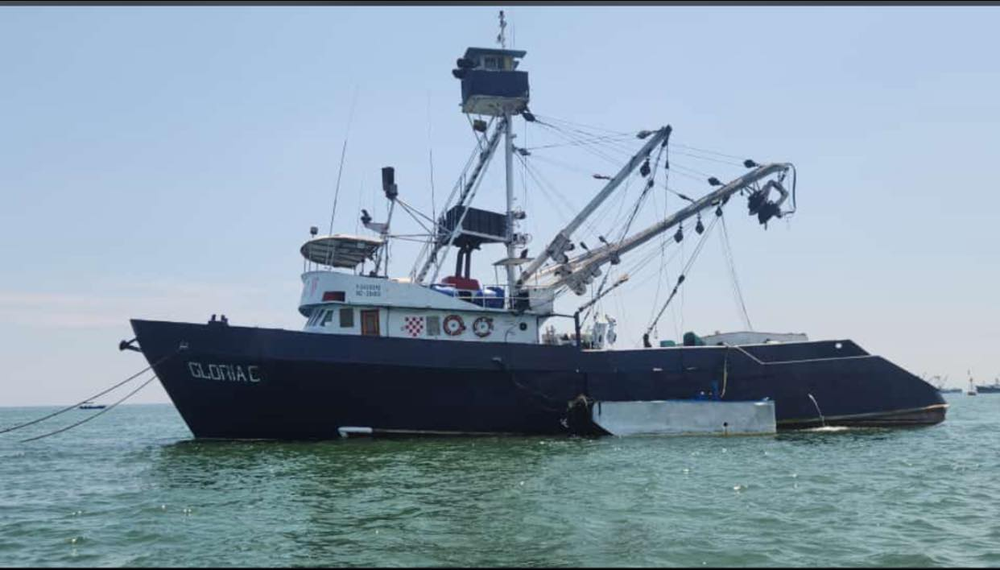

Gerente de Operaciones
PESCIMERA S.A., una empresa líder en la industria de productos pesqueros, está en búsqueda de un Gerente de Operaciones altamente cualificado para liderar y optimizar sus procesos operativos. La empresa se encuentra en un momento de expansión y crecimiento, por lo que necesita a un profesional con experiencia en la gestión eficiente de las operaciones para garantizar la eficacia y eficiencia en todas las áreas de la compañía.
El Gerente de Operaciones será responsable de supervisar y coordinar las actividades diarias, mejorar los procesos internos, garantizar la calidad de los productos y servicios, así como impulsar la innovación y la mejora continua en toda la cadena de suministro. PESCIMERA S.A. busca a alguien capaz de gestionar equipos de trabajo, tomar decisiones estratégicas, optimizar los recursos disponibles y asegurar el cumplimiento de los estándares de calidad y seguridad.
El candidato ideal para esta posición deberá poseer sólidos conocimientos en logística, planificación estratégica, gestión de inventario y control de costos. Además, se espera que tenga habilidades de liderazgo excepcionales, capacidad para trabajar bajo presión, resolver problemas de manera efectiva y fomentar un ambiente de trabajo colaborativo y motivador. El Gerente de Operaciones desempeñará un papel fundamental en el diseño e implementación de estrategias operativas que impulsen la eficiencia, la productividad y la rentabilidad de la empresa, contribuyendo así al éxito a largo plazo de PESCIMERA S.A.
Además, PESCIMERA S.A. busca a un profesional proactivo y orientado a resultados, capaz de identificar oportunidades de mejora, implementar soluciones innovadoras y adaptarse rápidamente a los cambios del mercado. El Gerente de Operaciones será el responsable de garantizar que todas las operaciones de la empresa se lleven a cabo de manera eficiente, cumpliendo con los estándares de calidad y seguridad establecidos, y contribuyendo al posicionamiento de PESCIMERA S.A. como referente en la industria de productos pesqueros. Este puesto representa una emocionante oportunidad para un líder con visión estratégica y habilidades operativas sobresalientes de unirse a una empresa en crecimiento y hacer una diferencia significativa en su desarrollo y éxito a futuro.